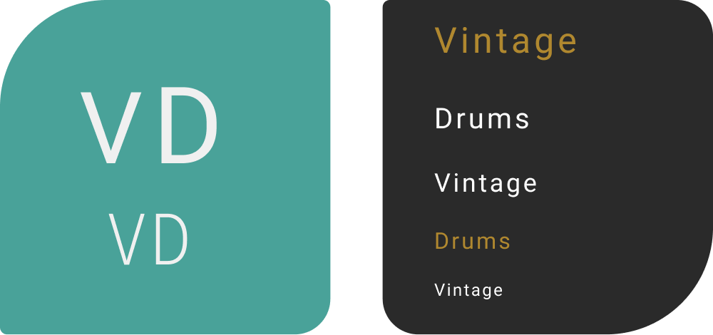
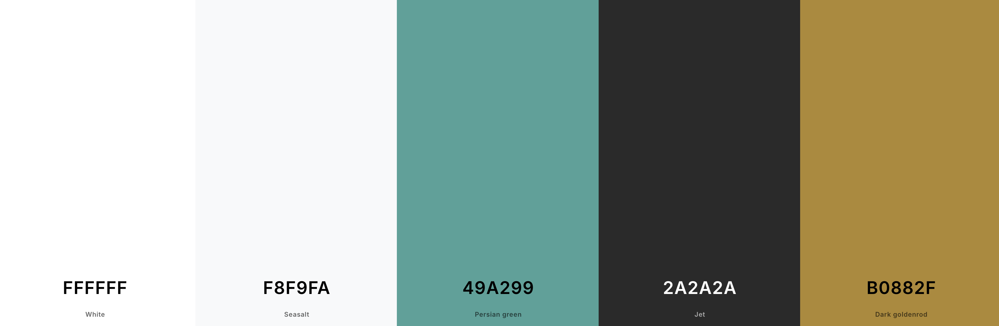

Vintage Drum Store
Visit Live Site →Project Overview
The Vintage Drum E-Commerce site is a premium online platform tailored for drum enthusiasts, musicians, and collectors seeking exceptional drums, cymbals, and accessories. This Django-based project showcases high-end vintage drums with a focus on user experience and product presentation.
Products are showcased with high-quality photographs and accompanied by sound recordings, enabling users to see and hear the unique characteristics of each drum and cymbal before purchasing. This innovative feature sets the site apart from traditional e-commerce platforms.
User Research & Competitor Analysis
To ensure the best UX and UI design, I conducted research on existing platforms selling vintage drums, analyzing both strengths and weaknesses:
- Drum Center of Portsmouth – Professional layout but lacks a true vintage aesthetic.
- Reverb – Large selection but the browsing experience is overwhelming.
- Vintage Drum Center – Dedicated vintage drum shop but has an outdated UI.
- eBay – Offers a marketplace format but lacks a curated experience.
Key Takeaways for Vintage Drums:
- Cleaner interface with curated product selections.
- Simplified navigation for intuitive browsing.
- Well-balanced visuals that highlight product details without overwhelming users.
UX/UI Design Process
- Research and Analysis: Conducted market research to understand the target audience and their needs.
- Information Architecture: Developed a clear and intuitive site structure, focusing on easy navigation and product discovery.
- Wireframing: Created low-fidelity wireframes to establish the layout and functionality of key pages.
- Visual Design: Designed a clean, modern interface that showcases the beauty of vintage drums.
- Prototyping: Developed interactive prototypes to test user flows and gather feedback.
- Iteration: Refined the design based on user feedback and stakeholder input.
Key Features
- Interactive product pages with high-quality images and sound recordings
- User authentication and personalised profiles with order history
- Advanced search functionality with filtering options
- Secure checkout process with Stripe integration
- Responsive design for seamless mobile and desktop experience
Design Considerations
Colour Palette
- Primary Background: White (#FFFFFF) & Off-White (#F8F9FA) for an open feel
- Footer: Dark Charcoal (#2A2A2A) for contrast
- Main Action Button: Teal-Green (#49A299) for attention
- Hover Button: Copper-Gold (#B0882F) on footer
Typography
- Primary Font: Roboto – for readability
- Logo Font: Custom "Vintage Drums" font
Icons & Favicon
- Favicon: Custom "V" icon
- Icons: Font Awesome icons for shopping cart, user accounts, etc.
Design Assets
Typography
Colour Palette
Final Thoughts
The Vintage Drum Store project blends design, functionality, and user experience to create an online shopping platform that appeals to musicians, collectors, and enthusiasts of vintage drums. With attention to detail in both design and feature set, the project offers a unique online shopping experience tailored to its niche audience.